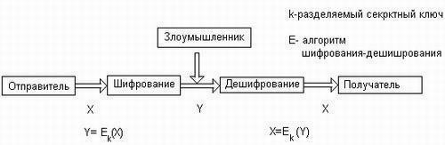
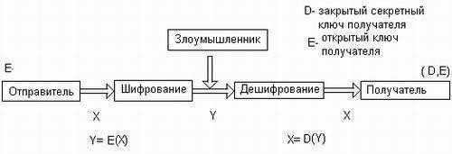
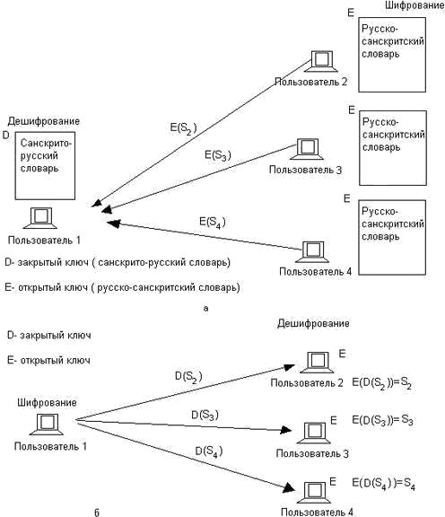
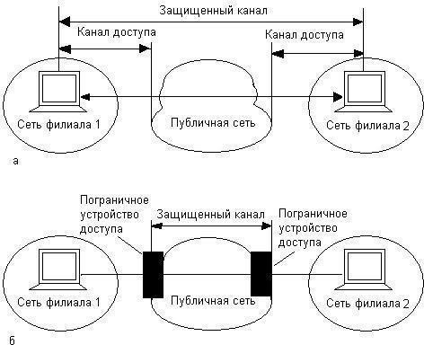

Лабораторная работа 12.
Изучение методов построения комплексной защиты сетевой файловой системы
Цель работы: изучить методы построения защищённой сетевой файловой системы.
Теоретическая часть
Файловые серверы и распределенные системы
Ключевым компонентом любой распределенной системы является файловая система, которая также является распределенной. С программной точки зрения распределенная файловая система является сетевой службой. Файловая служба включает программы-серверы и программы-клиенты, взаимодействующие с помощью определенного протокола по сети между собой.
Таким образом, файловым сервером называют не только компьютер, на котором хранятся предоставляемые в совместный доступ файлы, но и программу (или процесс, в рамках которого выполняется данная программа), которая работает на этом компьютере и обеспечивает совокупность услуг по доступу к файлам и каталогам на удаленном компьютере. Соответственно программу, работающую на клиентском компьютере и обращающуюся к файловому серверу с запросами, называют клиентом файловой системы, как
компьютер, на котором она работает. Такая неоднозначность терминов
«файловый сервер» и «клиент» обычно не вызывает затруднений, так как из контекста, как правило, понятно, о каком программном или аппаратном компоненте сети идет речь.
В сети может одновременно работать несколько программных файловых серверов, каждый из которых предлагает различные файловые услуги. Например, в распределенной системе могут быть два сервера, которые предоставляют файловые услуги систем UNIX и Windows соответственно, и пользовательские процессы могут обращаться к подходящему серверу. Кроме того, один компьютер может в одно и то же время предоставлять пользователям сети услуги различных файловых служб, для этого нужно, чтобы на этом компьютере работало несколько процессов, каждый из которых реализовывал бы файловую службу определенного типа.
В хорошо организованной распределенной системе пользователи не знают, как реализована файловая система. В частности, они не знают количество файловых серверов, их месторасположение и функции. Они только знают, что если процедура определена в файловой службе, то требуемая работа каким-то образом выполняется, возвращая им результаты. Более того, пользователи даже не должны знать, что файловая система является распределенной. В идеале для пользователя она должна выглядеть так же, как и централизованная файловая система.
Структура сетевой файловой системы
ФС в общем случае включает следующие элементы:
локальная файловая система;
интерфейс локальной файловой системы;
сервер сетевой файловой системы;
клиент сетевой файловой системы;
интерфейс сетевой файловой системы;
протокол клиент- сервер сетевой файловой системы.
Клиенты сетевой ФС – это программы, которые работают на многочисленных компьютерах, подключенных к сети. Эти программы обслуживают запросы приложений на доступ к файлам, хранящимся на удаленном компьютере. В качестве таких приложений часто выступают графические или символьные оболочки ОС, такие как Windows Explorer или UNIX shell, а также любые другие пользовательские программы.
Клиент сетевой ФС передает по сети запросы другому программному компоненту – серверу сетевой ФС, работающему на удаленном компьютере. Сервер, получив запрос, может выполнить его либо самостоятельно, либо, что является более распространенным вариантом, передать запрос локальной файловой системе для отработки. После получения ответа от локальной файловой системы сервер передает его по сети клиенту, а тот, в свою очередь, –приложению, обратившемуся с запросом.
Приложения обращаются к клиенту сетевой ФС, используя определенный программный интерфейс, который в данном случае является интерфейсом сетевой файловой системы. Этот интерфейс стараются сделать как можно более похожим на интерфейс локальной файловой системы, чтобы соблюсти принцип прозрачности. При полном совпадении интерфейсов приложение может обращаться к локальным и удаленным файлам и каталогам с помощью одних и тех же системных вызовов, совершенно не принимая во внимание места хранения данных. Например, если на серверах
сети используются локальные файловые системы FAT, то интерфейс сетевой файловой системы повторяет системные вызовы FAT.
Клиент и сервер сетевой файловой системы взаимодействуют друг с другом по сети по определенному протоколу. В случае совпадения интерфейсов локальной и сетевой файловых систем этот протокол может быть достаточно простым – в его функции будет входить ретрансляция серверу запросов, принятых клиентом от приложений, с которыми тот затем будет обращаться к локальной файловой системе. Одним из механизмов, используемых для этой цели, может быть механизм RPC.
Шифрование
Шифрование – это краеугольный камень всех служб информационной безопасности, будь то система аутентификации или авторизации, средства создания защищенного канала или способ безопасного хранения данных.
Любая процедура шифрования, превращающая информацию из обычного «понятного» вида в «нечитабельный» зашифрованный вид, естественно, должна быть дополнена процедурой дешифрирования, которая, будучи примененной к зашифрованному тексту, снова приводит его в понятный вид. Пара процедур – шифрование и дешифрирование – называется криптосистемой.
Информацию, над которой выполняются функции шифрования и дешифрирования, будем условно называть «текст», учитывая, что это может быть также числовой массив или графические данные.
В современных алгоритмах шифрования предусматривается Наличие параметра – секретного ключа. В криптографии принято правило Керкхоффа:
«Стойкость шифра должна определяться только секретностью ключа». Так, все стандартные алгоритмы шифрования (например, DES, PGP) широко известны, их детальное описание содержится в легко доступных документах, но от этого их эффективность не снижается. Злоумышленнику может быть все известно об алгоритме шифрования, кроме секретного ключа (следует отметить, однако, что существует немало фирменных алгоритмов, описание которых не публикуется).
Алгоритм шифрования считается раскрытым, если найдена процедура, позволяющая подобрать ключ за реальное время. Сложность алгоритма раскрытия является одной из важных характеристик криптосистемы и называется криптостойкостъю.
Существуют два класса криптосистем – симметричные и асимметричные. В симметричных схемах шифрования (классическая криптография) секретный ключ зашифровки совпадает с секретным ключом расшифровки. В асимметричных схемах шифрования (криптография с
открытым ключом) открытый ключ зашифровки не совпадает с секретным ключом расшифровки.
Симметричные алгоритмы шифрования
На рисунке 1 приведена классическая модель симметричной криптосистемы, теоретические основы которой впервые были изложены в 1949 году в работе Клода Шеннона. В данной модели три участника: отправитель, получатель, злоумышленник. Задача отправителя заключается в том, чтобы по открытому каналу передать некоторое сообщение в защищенном виде. Для этого он на ключе k зашифровывает открытый текст X и передает шифрованный текст Y. Задача получателя заключается в том, чтобы расшифровать Y и прочитать сообщение X. Предполагается, что отправитель имеет свой источник ключа. Сгенерированный ключ заранее по надежному каналу передается получателю. Задача злоумышленника заключается в перехвате и чтении передаваемых сообщений, а также в имитации ложных сообщений.

Рисунок 1 – Модель симметричного шифрования
Модель является универсальной – если зашифрованные; данные хранятся в компьютере и никуда не передаются, отправитель и получатель совмещаются в одном лице, а в роли злоумышленника выступает некто, имеющий доступ к компьютеру в ваше отсутствие.
Несимметричные алгоритмы шифрования
В середине 70-х двое ученых – Винфилд Диффи и Мартин Хеллман – описали принципы шифрования с открытыми ключами.
Особенность шифрования на основе открытых ключей состоит в том, что одновременно генерируется уникальная пара ключей, таких, что текст, зашифрованный одним ключом, может быть расшифрован только с использованием второго ключа и наоборот.
В модели криптосхемы с открытым ключом также три участника: отправитель, получатель, злоумышленник (рисунок 2). Задача отправителя заключается в том, чтобы по открытому каналу связи передать некоторое сообщение в защищенном виде. Получатель генерирует на своей стороне два ключа: открытый Е и закрытый D. Закрытый ключ D (часто называемый
также личным ключом) абонент должен сохранять в защищенном месте, а открытый ключ Е он может передать всем, с кем он хочет поддерживать защищенные отношения. Открытый ключ используется для шифрования текста, но расшифровать текст можно только с помощью закрытого ключа. Поэтому открытый ключ передается отправителю в незащищенном виде. Отправитель, используя открытый ключ получателя, шифрует сообщение X и передает его получателю. Получатель расшифровывает сообщение своим закрытым ключом D.
Очевидно, что числа, одно из которых используется для шифрования текста, а другое – для дешифрирования, не могут быть независимыми друг от друга, а значит, есть теоретическая возможность вычисления закрытого ключа по открытому, но это связано с огромным количеством вычислений, которые требуют соответственно огромного времени. Поясним принципиальную связь между закрытым и открытым ключами следующей аналогией.
Рисунок 2 – Модель криптосхемы с открытым ключом

Для того чтобы в сети все п абонентов имели возможность не только принимать зашифрованные сообщения, но и сами посылать таковые, каждый абонент должен обладать своей собственной парой ключей Е и D. Всего в сети будет 2п ключей: п открытых ключей для шифрования и n секретных ключей для дешифрирования. Таким образом решается проблема масштабируемости — квадратичная зависимость количества ключей от числа абонентов в симметричных алгоритмах заменяется линейной зависимостью в несимметричных алгоритмах. Исчезает и задача секретной доставки ключа. Злоумышленнику нет смысла стремиться завладеть открытым ключом, поскольку это не дает возможности расшифровывать текст или вычислить закрытый ключ.

Рисунок 3 – Две схемы использования открытого и закрытого ключей
Хотя информация об открытом ключе не является секретной, ее нужно защищать от подлогов, чтобы злоумышленник под именем легального пользователя не навязал свой открытый ключ, после чего с помощью своего закрытого ключа он может расшифровывать все сообщения, посылаемые легальному пользователю и отправлять свои сообщения от его имени. Проще всего было бы распространять списки, связывающие имена пользователей с их открытыми ключами широковещательно, путем публикаций в средствах массовой информации (бюллетени, специализированные журналы и т. п.). Однако при таком подходе мы снова, как и в случае с паролями, сталкиваемся с плохой масштабируемостью. Решением этой проблемы является технология цифровых сертификатов. Сертификат – это электронный документ, который связывает конкретного пользователя с конкретным ключом.
Аутентификация
Аутентификация (authentication) предотвращает доступ к сети нежелательных лиц и разрешает вход для легальных пользователей. Термин
«аутентификация» в переводе с латинского означает «установление подлинности». Аутентификацию следует отличать от идентификации. Идентификаторы пользователей используются в системе с теми же целями, что и идентификаторы любых других объектов, файлов, процессов, структур данных, но они не связаны непосредственно с обеспечением безопасности. Идентификация заключается в сообщении пользователем системе своего идентификатора, в то время как аутентификация – это процедура доказательства пользователем того, что он есть тот, за кого себя выдает, в частности, доказательство того, что именно ему принадлежит введенный им идентификатор.
В процедуре аутентификации участвуют две стороны: одна сторона доказывает свою аутентичность, предъявляя некоторые доказательства, а другая сторона – аутентификатор – проверяет эти доказательства и принимает решение. В качестве доказательства аутентичности используются самые разнообразные приемы:
• аутентифицируемый может продемонстрировать знание некоего общего для обеих сторон секрета: слова (пароля) или факта (даты и места события, прозвища человека и т. п.);
• аутентифицируемый может продемонстрировать, что он владеет неким уникальным предметом (физическим ключом), в качестве которого может выступать, например, электронная магнитная карта;
• аутентифицируемый может доказать свою идентичность, используя собственные бихарактеристики: рисунок радужной оболочки глаза или отпечатки пальцев, которые предварительно были занесены в базу данных аутентификатора.
Сетевые службы аутентификации строятся на основе всех этих приемов, но чаще всего для доказательства идентичности пользователя используются пароли. Простота и логическая ясность механизмов аутентификации на основе паролей в какой-то степени компенсирует известные слабости паролей. Это, во-первых, возможность раскрытия и разгадывания паролей, а во-вторых, возможность «подслушивания» пароля путем анализа сетевого трафика. Для снижения уровня угрозы от раскрытия паролей администраторы сети, как правило, применяют встроенные программные средства для формирования политики назначения и использования паролей: задание максимального и минимального сроков действия пароля, хранение списка уже использованных паролей, управление поведением системы после нескольких неудачных попыток логического
входа и т. п. Перехват паролей по сети можно предупредить путем их шифрования перед передачей в сеть.
Легальность пользователя может устанавливаться по отношению к различным системам. Так, работая в сети, пользователь может проходить процедуру аутентификации и как локальный пользователь, который претендует на использование ресурсов только данного компьютера, и как пользователь сети, который хочет получить доступ ко всем сетевым ресурсам. При локальной аутентификации пользователь вводит свои идентификатор и пароль, которые автономно обрабатываются операционной системой, установленной на данном компьютере. При логическом входе в сеть данные о пользователе (идентификатор и пароль) передаются на сервер, который хранит учетные записи обо всех пользователях сети. Многие приложения имеют свои средства определения, является ли пользователь законным. И тогда пользователю приходится проходить дополнительные этапы проверки.
В качестве объектов, требующих аутентификации, могут выступать не только пользователи, но и различные устройства, приложения, текстовая и другая информация. Так, например, пользователь, обращающийся с запросом корпоративному серверу, должен доказать ему свою легальность, но он также должен убедиться сам, что ведет диалог действительно с сервером своего предприятия. Другими словами, сервер и клиент должны пройти процедуру взаимной аутентификации. Здесь мы имеем дело с аутентификацией на уровне приложений. При установлении сеанса связи между двумя устройствами также часто предусматриваются процедуры взаимной аутентификации на более низком, канальном уровне. Примером такой процедуры является аутентификация по протоколам РАР и CHAP, входящим в семейство протоколов РРР. Аутентификация данных означает доказательство целостности этих данных, а также того, что они поступили именно от того человека, который объявил об этом. Для этого используется механизм электронной подписи.
Авторизация доступа
Средства авторизации (authorization) контролируют доступ легальных пользователей к ресурсам системы, предоставляя каждому из них именно те права, которые ему были определены администратором. Кроме предоставления прав доступа пользователям к каталогам, файлам и принтерам система авторизации может контролировать возможность выполнения пользователями различных системных функций, таких как локальный доступ к серверу, установка системного времени, создание резервных копий данных, выключение сервера и т. п.
Система авторизации наделяет пользователя сети правами выполнять определенные действия над определенными ресурсами. Для этого могут быть использованы различные формы предоставления правил доступа, которые часто делят на два класса:
• Избирательный доступ;
• Мандатный доступ.
Избирательные права доступа реализуются в операционных системах универсального назначения. В наиболее распространенном варианте такого подхода определенные операции над определенным ресурсом разрешаются или запрещаются пользователям или группам пользователей, явно указанным своими идентификаторами. Например, пользователю, имеющему идентификатор User_T, может быть разрешено выполнять операции чтения и записи по отношению к файлу Filet. Модификацией этого способа является использование для идентификации пользователей их должностей, или факта их принадлежности к персоналу того или иного производственного подразделения, или еще каких-либо других позиционирующих характеристик. Примером такого правила может служить следующее: файл бухгалтерской отчетности BUCH могут читать работники бухгалтерии и руководитель предприятия.
Мандатный подход к определению прав доступа заключается в том, что вся информация делится на уровни в зависимости от степени секретности, а все пользователи сети также делятся на группы, образующие иерархию в соответствии с уровнем допуска к этой информации. Такой подход используется в известном делении информации на информацию для служебного пользования, «секретно», «совершенно секретно». При этом пользователи этой информации в зависимости от определенного для них статуса получают различные формы допуска: первую, вторую или третью. В отличие от систем с избирательными правами доступа в системах с мандатным подходом пользователи в принципе не имеют возможности изменить уровень доступности информации. Например, пользователь более высокого уровня не может разрешить читать данные из своего файла пользователю, относящемуся к более низкому уровню. Отсюда видно, что мандатный подход является более строгим, он в корне пресекает всякий волюнтаризм со стороны пользователя. Именно поэтому он часто используется в системах военного назначения.
Процедуры авторизации реализуются программными средствами, которые могут быть встроены в операционную систему или в приложение, а также могут поставляться в виде отдельных программных продуктов. При этом программные системы авторизации могут строиться на базе двух схем:
централизованная схема авторизации, базирующаяся на сервере;
децентрализованная схема, базирующаяся на рабочих станциях.
первой схеме сервер управляет процессом предоставления ресурсов пользователю. Главная цель таких систем — реализовать «принцип единого входа». В соответствии с централизованной схемой пользователь один раз логически входит в сеть и получает на все время работы некоторый набор разрешений по доступу к ресурсам сети. Система Kerberos с ее сервером безопасности и архитектурой клиент-сервер является наиболее известной системой этого типа. Системы TACACS и RADIUS, часто применяемые совместно с системами удаленного доступа, также реализуют этот подход.
При втором подходе рабочая станция сама является защищенной – средства защиты работают на каждой машине, и сервер не требуется.
Рассмотрим работу системы, в которой не предусмотрена процедура однократного логического входа. Теоретически доступ к каждому приложению должен контролироваться средствами безопасности самого приложения или же средствами, существующими в той операционной среде, в которой оно работает. В корпоративной сети администратору придется отслеживать работу механизмов безопасности, используемых всеми типами приложений – электронной почтой, службой каталогов локальной сети, базами данных хостов и т. п. Когда администратору приходится добавлять или удалять пользователей, то часто требуется вручную конфигурировать доступ к каждой программе или системе.
В крупных сетях часто применяется комбинированный подход предоставления пользователю прав доступа к ресурсам сети: сервер удаленного доступа ограничивает доступ пользователя к подсетям или серверам корпоративной сети, то есть к укрупненным элементам сети, а каждый отдельный сервер сети сам по себе ограничивает доступ пользователя к своим внутренним ресурсам: разделяемым каталогам, принтерам или приложениям. Сервер удаленного доступа предоставляет доступ на основании имеющегося у него списка прав доступа пользователя (Access Control List, ACL), а каждый отдельный сервер сети предоставляет
доступ к своим ресурсам на основании хранящегося у него списка прав доступа, например ACL файловой системы.
Подчеркнем, что системы аутентификации и авторизации совместно выполняют одну задачу, поэтому необходимо предъявлять одинаковый уровень требований к системам авторизации и аутентификации. Ненадежность одного звена здесь не может быть компенсирована высоким качеством другого звена. Если при аутентификации используются пароли, то требуются чрезвычайные меры по их защите. Однажды украденный пароль открывает двери ко всем приложениям и данным, к которым пользователь с этим паролем имел легальный доступ.
Аудит
Аудит (auditing) – фиксация в системном журнале событий, связанных с доступом к защищаемым системным ресурсам. Подсистема аудита современных ОС позволяет дифференцирование задавать перечень интересующих администратора событий с помощью удобного графического интерфейса. Средства учета и наблюдения обеспечивают возможность обнаружить и зафиксировать важные события, связанные с безопасностью, или любые попытки создать, получить доступ или удалить системные ресурсы. Аудит используется для того, чтобы засекать даже неудачные попытки «взлома» системы.
Учет и наблюдение означает способность системы безопасности
«шпионить» за выбранными объектами и их пользователями и выдавать сообщения тревоги, когда кто-нибудь пытается читать или модифицировать системный файл. Если кто-то пытается выполнить действия, определенные системой безопасности для отслеживания, то система аудита пишет сообщение в журнал регистрации, идентифицируя пользователя. Системный менеджер может создавать отчеты о безопасности, которые содержат информацию из журнала регистрации. Для «сверхбезопасных» систем предусматриваются аудио- и видеосигналы тревоги, устанавливаемые на машинах администраторов, отвечающих за безопасность.
Поскольку никакая система безопасности не гарантирует защиту на уровне 100 %, то последним рубежом в борьбе с нарушениями оказывается система аудита.
Действительно, после того как злоумышленнику удалось провести успешную атаку, пострадавшей стороне не остается ничего другого, как обратиться к службе аудита. Если при настройке службы аудита были правильно заданы события, которые требуется отслеживать, то подробный анализ записей в журнале может дать много полезной информации. Эта информация, возможно, позволит найти злоумышленника или по крайней
мере предотвратить повторение подобных атак путем устранения уязвимых мест в системе защиты.
Технология защищенного канала
Как уже было сказано, задачу защиты данных можно разделить на две подзадачи: защиту данных внутри компьютера и защиту данных в процессе их передачи из одного компьютера в другой. Для обеспечения безопасности данных при их передаче по публичным сетям используются различные технологии защищенного канала.
Технология защищенного капала призвана обеспечивать безопасность передачи данных по открытой транспортной сети, например по Интернету. Защищенный канал подразумевает выполнение трех основных функций:
• Взаимную аутентификацию абонентов при установлении соединения, которая может быть выполнена, например, путем обмена паролями ;
• Защиту передаваемых по каналу сообщений от несанкционированного доступа, например, путем шифрования;
• Подтверждение целостности поступающих по каналу сообщений, например путем передачи одновременно с сообщением его дайджеста.
Совокупность защищенных каналов, созданных предприятием в публичной сети для объединения своих филиалов, часто называют виртуальной частной сетью (Virtual Private Network, VPN).
Существуют разные реализации технологии защищенного канала, которые, в частности, могут работать на разных уровнях модели OSI. Так, функции популярного протокола SSL соответствуют представительному уровню модели OSI. Новая версия сетевого протокола IP предусматривает все функции – взаимную аутентификацию, шифрование и обеспечение целостности , – которые по определению свойственны защищенному каналу, протокол туннелирования РРТР защищает данные на канальном уровне.
В зависимости от места расположения программного обеспечения защищенного канала различают две схемы его образования:
• схему с конечными узлами, взаимодействующими через публичную сеть (рисунок 4, а);
• схему с оборудованием поставщика услуг публичной сети (рисунок 4, б);
В первом случае канал образуется программными средствами, установленными на двух удаленных компьютерах, принадлежащих двум разным локальным сетям одного предприятия и связанных между собой через публичную сеть. Преимуществом этого подхода является полная защищенность канала вдоль всего пути следования, а также возможность использования любых протоколов создания защищенных каналов, лишь бы на конечных точках канала поддерживался один и тот же протокол. Недостатки заключаются в избыточности и децентрализованности решения. Избыточность состоит в том, что вряд ли стоит создавать защищенный канал на всем пути прохождения данных: уязвимыми для злоумышленников обычно являются сети с коммутацией пакетов, а не каналы телефонной сети или выделенные каналы, через которые локальные сети подключены к территориальной сети. Поэтому защиту каналов доступа к публичной сети можно считать избыточной. Децентрализация заключается в том, что для каждого компьютера, которому требуется предоставить услуги защищенного канала, необходимо отдельно устанавливать, конфигурировать и администрировать программные средства защиты данных. Подключение каждого нового компьютера к защищенному каналу требует выполнения этих трудоемких работ заново.

Рисунок 4 – Два способа образования защищенного канала
Во втором случае клиенты и серверы не участвуют в создании защищенного канала – он прокладывается только внутри публичной сети с коммутацией пакетов, например внутри Интернета. Канал может быть проложен, например, между сервером удаленного доступа поставщика услуг публичной сети и пограничным маршрутизатором корпоративной сети. Это хорошо масштабируемое решение, управляемое централизованно как администратором корпоративной сети, так и администратором сети
поставщика услуг. Для компьютеров корпоративной сети канал прозрачен – программное обеспечение этих конечных узлов остается без изменений. Такой гибкий подход позволяет легко образовывать новые каналы защищенного взаимодействия между компьютерами независимо от их места расположения. Реализация этого подхода сложнее — нужен стандартный протокол образования защищенного канала, требуется установка у всех поставщиков услуг программного обеспечения, поддерживающего такой протокол, необходима поддержка протокола производителями пограничного коммуникационного оборудования. Однако вариант, когда все заботы по поддержанию защищенного канала берет на себя поставщик услуг публичной сети, оставляет сомнения в надежности защиты: во-первых, незащищенными оказываются каналы доступа к публичной сети, во-вторых, потребитель услуг чувствует себя в полной зависимости от надежности поставщика услуг. И тем не менее, специалисты прогнозируют, что именно вторая схема в ближайшем будущем станет основной в построении защищенных каналов.